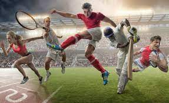

 Deportes
21/01/22
Deportes
El deporte es la práctica de un ejercicio físico regulado y competitivo. El deporte puede ser recreativo, profesional o como una forma de mejorar la salud. El deporte al abarcar varias áreas de nuestra sociedad conlleva una complejidad simbólica en su dimensión social y cultural ya que actualmente el deporte es una práctica, un espectáculo y un estilo de vida. Uno de los deportes más conocidos como espectáculo es el fútbol y el béisbol. Se caracterizan por ser una competición entre dos equipos, o más de dos si es un torneo, con deportistas que se sujetan a las reglas del juego creando un espectáculo para su público asistente. Debido a las irregularidades que el deporte de espectáculo ha generado con el solo objetivo de alcanzar la victoria, hoy en día se enfatiza el concepto de fair play o ‘juego limpio’ como un comportamiento deportivo ideal. Deporte es sinónimo de juego, gimnástica, ejercicio físico, recreación y ocio. Deporte proviene del latín deportare que significaba trasladar o transportar fuera de las murallas de la ciudad. El término comienza a mudar conceptualmente a recreación (ya que era practicado fuera de las murallas y al aire libre) usado por primera vez en el Cantar del Mío Cid con el verbo deportarse como sinónimo de ‘diversión’ y no de 'traslado'. Deportare derivó luego a las demás lenguas románticas como deport en lengua la provenzal, deport en catalán, desport en francés, disporto en italiano, desporto en portugués y deporte en castellano significando ejercicio físico y todo tipo de juegos y entretenimiento que implican corporalidad.


 antidepresivos
antidepresivos